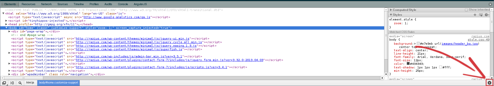
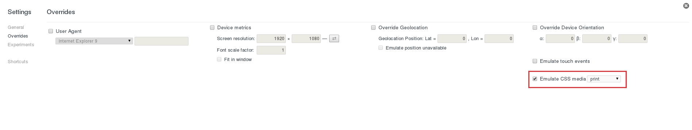

Testing CSS print media queries is really difficult but a new featured was introduced in Google Chrome in December that allows you to apply different CSS media types like handheld, print, screen and so on.
- Open Developer Tools in Google Chrome by clicking the menu icon at the top-right of your browser window, then select Tools → Developer tools.
- Open up the Overrides menu in the Developer Tools by clicking the gear in the bottom right corner:

- Enable "Emulate CSS media" and select the "print" media type option from the drop-down box:

You can find more information and nifty tricks in the official documentation.
Go Top